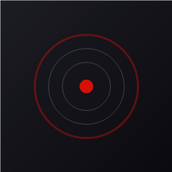

Connect to Last.fm
Login to your Last.fm account directly or configure custom API credentials.
Your credentials are sent securely to Last.fm and are never saved. Only a session key is stored locally.
Authorize this extension via the official Last.fm website without sharing your password.
Advanced API Key Setup (Optional)
By default, the extension uses a built-in API key. Provide your own key below if you wish.

No track playing
Play music to start scrobbling
0:00
Pending
0:00
Master Scrobble Toggle
Toggle all scrobbling activity
Recent Scrobbles
No scrobbles recorded yet
Website Permissions
Enable or disable scrobbling and like-syncing for individual platforms.
Scrobbling Preferences
Submit Now Playing Status
Let Last.fm know what you are currently playing
Immersive Cover Art
Expand album art to fill screen in player mode
Minimum Track Duration
Do not scrobble tracks shorter than this (seconds)
Trigger Scrobble Point
When to submit the scrobble